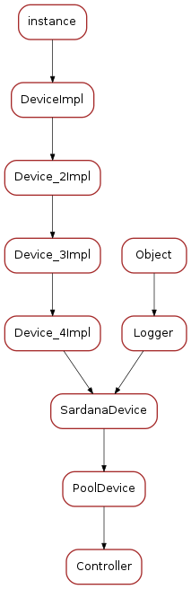

Controller¶
Classes
Controller¶
-
class
Controller(dclass, name)[source]¶ Bases:
sardana.tango.pool.PoolDevice.PoolDevice-
ctrl¶
-
ControllerClass¶

-
class
ControllerClass(name)[source]¶ Bases:
sardana.tango.pool.PoolDevice.PoolDeviceClass-
class_property_list= {}¶
-
device_property_list= {'Library': [tango._tango.CmdArgType.DevString, '', None], 'Force_HW_Read': [tango._tango.CmdArgType.DevBoolean, 'Force a hardware read of value even when in operation (motion/acquisition', False], 'Type': [tango._tango.CmdArgType.DevString, '', None], 'Id': [tango._tango.CmdArgType.DevLong64, 'Internal ID', 0], 'Klass': [tango._tango.CmdArgType.DevString, '', None], 'Role_ids': [tango._tango.CmdArgType.DevVarLongArray, '', []]}¶
-
cmd_list= {'Abort': [[tango._tango.CmdArgType.DevVoid, ''], [tango._tango.CmdArgType.DevVoid, '']], 'CreateElement': [[tango._tango.CmdArgType.DevVarStringArray, ''], [tango._tango.CmdArgType.DevVoid, '']], 'Stop': [[tango._tango.CmdArgType.DevVoid, ''], [tango._tango.CmdArgType.DevVoid, '']], 'DeleteElement': [[tango._tango.CmdArgType.DevString, ''], [tango._tango.CmdArgType.DevVoid, '']], 'Restore': [[tango._tango.CmdArgType.DevVoid, ''], [tango._tango.CmdArgType.DevVoid, '']]}¶
-
attr_list= {'LogLevel': [[tango._tango.CmdArgType.DevLong, tango._tango.AttrDataFormat.SCALAR, tango._tango.AttrWriteType.READ_WRITE], {'Display level': tango._tango.DispLevel.EXPERT, 'Memorized': 'true', 'label': 'Log level'}], 'ElementList': [[tango._tango.CmdArgType.DevString, tango._tango.AttrDataFormat.SPECTRUM, tango._tango.AttrWriteType.READ, 4096]]}¶
-